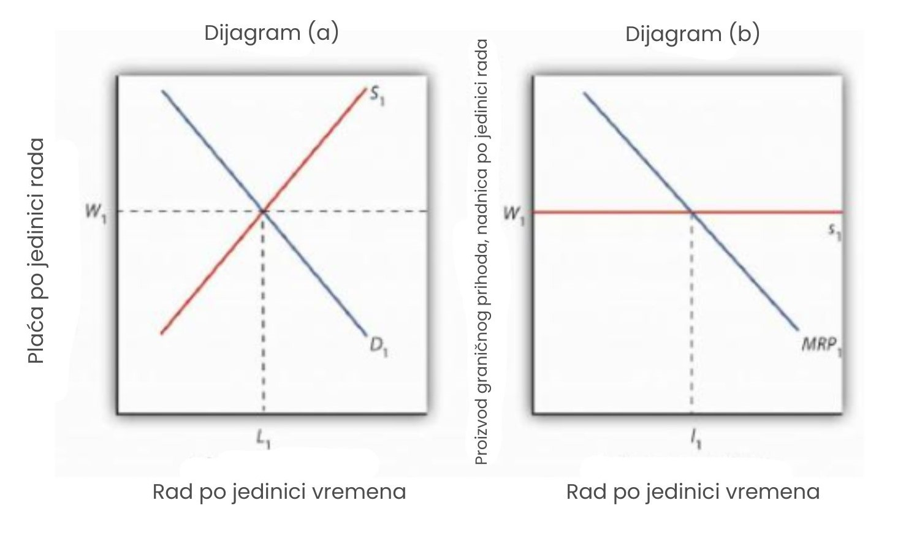
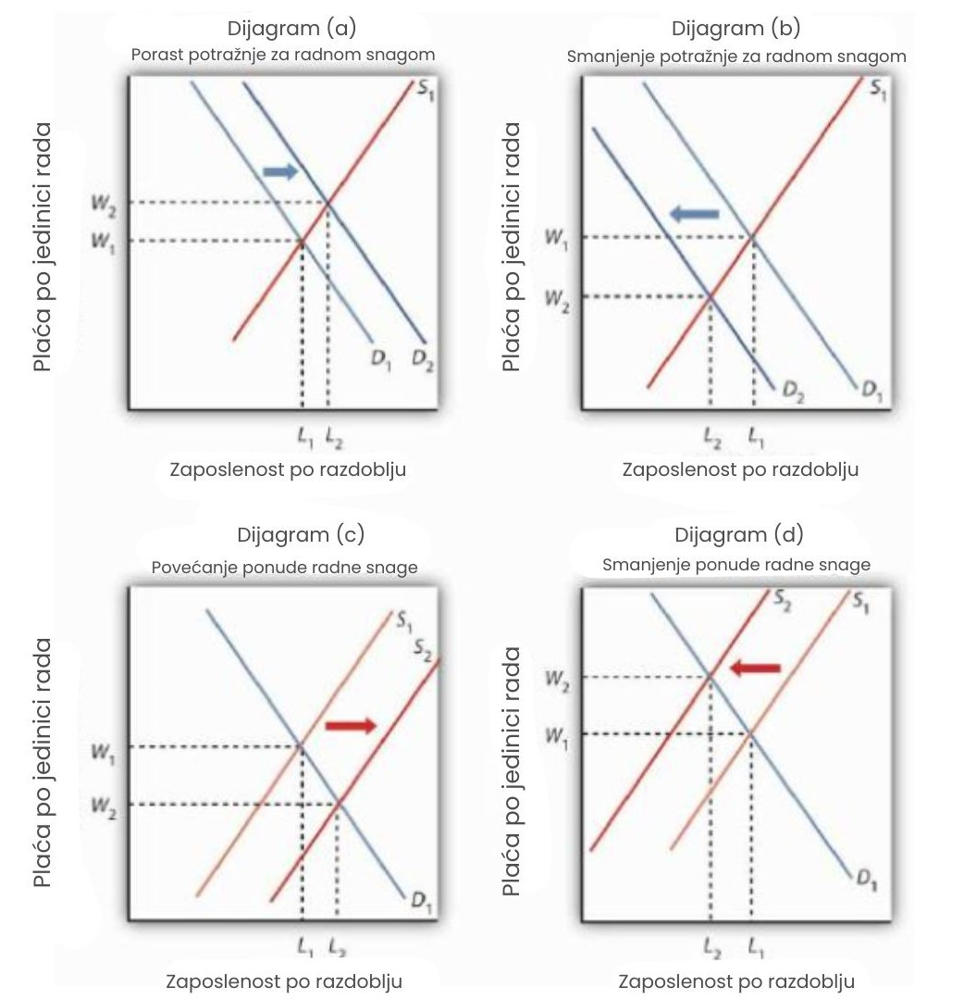
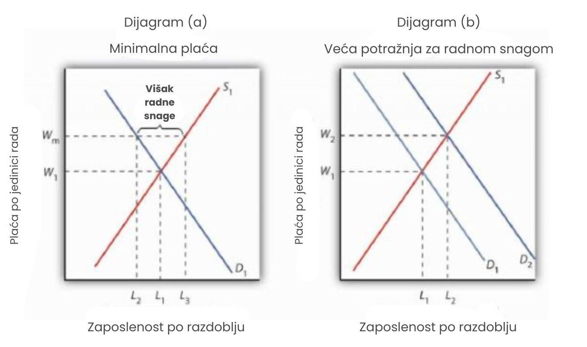

Funkcioniranje tržišta rada
Vidjeli smo da potražnja poduzeća za radom ovisi o graničnom proizvodu rada i cijeni proizvoda koji poduzeće proizvodi. Zbrajanjem krivulja potražnje pojedinih poduzeća dobivamo tržišnu krivulju potražnje za radom. Krivulja ponude rada ovisi o varijablama kao što su broj stanovnika i preferencije radnika. Ponuda na određenom tržištu ovisi o varijablama poput preferencija radnika, vještina i obrazovanja potrebnih za određeni posao te plaća koje su dostupne u alternativnim zanimanjima. Plaće se određuju na sjecištu potražnje i ponude.
Kada se na određenom tržištu uspostavi plaća, pojedina poduzeća u savršenoj konkurenciji tu plaću prihvaćaju kao zadanu. Budući da je svako poduzeće „primatelj cijene“, ono se suočava s horizontalnom krivuljom ponude rada na tržišnoj plaći. Za jedno poduzeće, promjena količine radne snage koju zapošljava ne mijenja plaću. U kontekstu modela savršene konkurencije, kupci i prodavatelji su primatelji cijena. To znači da odluke poduzeća o zapošljavanju radne snage ne utječu na plaću.
Funkcioniranje tržišta rada u uvjetima savršene konkurencije prikazano je na slici. Plaća W1 određena je sjecištem potražnje i ponude na dijagramu (a). Zaposlenost iznosi L1 jedinica rada po razdoblju. Pojedinačno poduzeće tu plaću prihvaća kao zadanu; to je krivulja ponude s1 s kojom se poduzeće suočava. Ta plaća također je jednaka graničnom trošku faktora za poduzeće. Poduzeće zapošljava l1 jedinica rada, količinu određenu sjecištem njegove krivulje graničnog prihoda od proizvoda rada (MRP1) i krivulje ponude s1. Mala slova koristimo za prikaz količine za jedno poduzeće, a velika slova za prikaz količine na tržištu.
Plaće u savršenoj konkurenciji određuju se sjecištem potražnje i ponude na dijagramu (a). Pojedino poduzeće prihvaća plaću W1 kao zadanu. Suočava se s horizontalnom krivuljom ponude rada na tržišnoj plaći, kao što je prikazano na dijagramu (b). Ta krivulja ponude s1 ujedno je i krivulja graničnog troška faktora rada. Poduzeće reagira na plaću tako da zapošljava l1 jedinica rada, količinu određenu sjecištem njegove krivulje graničnog prihoda od proizvoda rada MRP1 i njegove krivulje ponude s1.
Promjene u potražnji i ponudi
Ako su plaće određene potražnjom i ponudom, tada bi promjene u potražnji i ponudi trebale utjecati na plaće. Povećanje potražnje ili smanjenje ponude povećat će plaće; povećanje ponude ili smanjenje potražnje smanjit će ih.
Dijagram (a) na sljedećoj slici prikazuje kako povećanje potražnje za radom utječe na plaće i zaposlenost. Pomak potražnje na D2 podiže plaću na W2 i povećava zaposlenost na L2. Takvo povećanje podrazumijeva da se povećao granični proizvod rada, da se povećao broj poduzeća ili da je porasla cijena dobra koje rad proizvodi. Kao što smo vidjeli, granični proizvod rada može porasti zbog povećane uporabe drugih faktora proizvodnje, poboljšanja tehnologije ili povećanja ljudskog kapitala.
Dijagram (a) prikazuje povećanje potražnje za radom; plaća raste na W2, a zaposlenost raste na L2. Smanjenje potražnje za radom, prikazano na dijagramu (b), smanjuje zaposlenost i razinu plaće. Povećanje ponude rada, prikazano u panelu (c), smanjuje plaću na W2 i povećava zaposlenost na L2. Dijagram (d) prikazuje učinak smanjenja ponude rada; plaće rastu, a zaposlenost opada.
Očito je da je rastuća potražnja za radom bila dominantan trend na tržištu rada SAD-a kroz većinu povijesti zemlje. Plaće i zaposlenost uglavnom su rasli kako se povećavala dostupnost kapitala i drugih proizvodnih faktora, kako je napredovala tehnologija i kako je rastao ljudski kapital. Sve to povećalo je produktivnost rada i djelovalo na povećanje plaća.
Dijagram (b) na slici prikazuje smanjenje potražnje za radom na D2. I plaće i zaposlenost opadaju. S obzirom na to da ukupna potražnja za radom općenito raste, smanjena potražnja za radom najčešće se javlja u pojedinim tržištima rada. Na primjer, pad građevinske aktivnosti u određenoj zajednici može smanjiti potražnju za građevinskim radnicima. Tehnološke promjene mogu smanjiti, ali i povećati potražnju. Primjer u okviru teme o plaćama i tehnologiji sugerira da su tehnološke promjene od kasnih 1970-ih imale tendenciju smanjivanja potražnje za radnicima sa samo srednjoškolskim obrazovanjem, dok su povećavale potražnju za onima s fakultetskom diplomom.
Dijagram (c) prikazuje učinak povećanja ponude rada. Krivulja ponude pomiče se na S2, što povećava zaposlenost na L2 i smanjuje plaću na W2. Za tržište rada u cjelini, takvo povećanje ponude moglo bi nastati zbog porasta broja stanovnika ili povećanja količine rada koju su ljudi spremni obavljati. Za pojedina tržišta rada, ponuda će se povećati kako se ljudi sele u određeno tržište.
Baš kao što je potražnja za radom kroz većinu povijesti SAD-a rasla, tako je rasla i ponuda rada. Broj stanovnika rastao je i zbog imigracije i zbog prirodnog priraštaja. Takvi porasti, uz nepromijenjene ostale čimbenike koji određuju plaće, teže smanjenju plaća. Činjenica da su plaće imale tendenciju rasta sugerira da je potražnja općenito rasla brže od ponude. Ipak, što ponuda više raste, to će povećanje plaća biti manje, čak i ako potražnja raste.
Na kraju, dijagram (d) prikazuje učinak smanjenja ponude rada. Jedan dramatičan primjer pada ponude rada bio je uzrokovan smanjenjem populacije nakon izbijanja bubonske kuge u Europi 1348. godine — tzv. crne smrti. Kuga je u nekoliko godina ubila otprilike trećinu europskog stanovništva, snažno pomaknuvši krivulju ponude rada ulijevo. Plaće su se tijekom tog razdoblja udvostručile (Cipolla, C. M., 1980).
Činjenica da smanjenje ponude rada ima tendenciju povećanja plaća objašnjava nastojanja nekih skupina zaposlenika da smanje ponudu rada. Pripadnici određenih profesija uspješno su promovirali stroge zahtjeve za licenciranjem kako bi ograničili broj ljudi koji mogu ući u profesiju — liječnici u SAD-u bili su osobito uspješni u tom nastojanju. Sindikati često zagovaraju ograničenja imigracije kako bi smanjili ponudu rada i time povećali plaće.
Konkurentna tržišta rada i minimalna plaća
Primjer o tehnologiji i razlici u plaćama upućuje na važan društveni problem. Promjene u tehnologiji povećavaju potražnju za visokoobrazovanim radnicima. Posljedično, nastala premija na plaće za radnike s višim obrazovanjem predstavlja signal koji potiče ljude da steknu više obrazovanje. Tržište je izuzetno snažan mehanizam za usmjeravanje resursa u područja najveće potražnje. Međutim, istovremeno, čini se da promjene u tehnologiji ostavljaju slabije obrazovane radnike iza sebe. Što će se dogoditi s ljudima koji nemaju priliku razviti vještine koje tržište visoko cijeni ili koji to nisu u stanju učiniti?
Kako bi se povećale plaće radnika s relativno niskim prihodima, vlade diljem svijeta uvele su minimalne plaće. Minimalna plaća funkcionira kao i druge cjenovne podnice (najniže dozvoljene cijene). Učinak minimalne plaće prikazan je na dijagramu (a). Pretpostavimo da je trenutačna ravnotežna plaća za nekvalificirane radnike W1, određena presjekom krivulja ponude i potražnje za tim radnicima. Vlada procijeni da je ta plaća preniska i određuje da se poveća na Wm, što je minimalna plaća. Ova mjera smanjuje zaposlenost s L1 na L2, ali povećava prihode onih koji nastave raditi. Viša plaća također povećava količinu rada koju su radnici spremni ponuditi, na L3. Razlika između količine rada koju radnici žele ponuditi i količine koju poslodavci žele zaposliti, L3 - L2, predstavlja višak ponude rada — višak koji povećava nezaposlenost.
Vlada može odgovoriti na nisku plaću uvođenjem minimalne plaće u iznosu Wm, kao što je prikazano na dijagramu (a). To povećava količinu ponuđene radne snage i smanjuje količinu tražene radne snage. Ipak, povećava prihode onih koji zadrže posao. Drugi način na koji vlada može povećati plaće je povećanjem potražnje za radom, što je prikazano na dijagramu (b). Time rastu i plaće i zaposlenost.
Neki ekonomisti protive se povećanju minimalne plaće jer smatraju da takva povećanja povećavaju nezaposlenost. Drugi ekonomisti tvrde da je potražnja za nekvalificiranim radom relativno neelastična, pa viša minimalna plaća povećava prihode nekvalificiranih radnika kao skupine. Taj dobitak, kažu oni, opravdava politiku, čak i ako povećava nezaposlenost.
Alternativa zakonskom uvođenju minimalne plaće je pokušaj povećanja potražnje za radom. Takav pristup ilustriran je na panelu (b). Povećanje potražnje na D2 podiže plaću na W2 i istovremeno povećava zaposlenost na L2. Programi osposobljavanja u javnom sektoru koji imaju za cilj povećanje ljudskog kapitala primjeri su takve politike.
Još jedna alternativa je subvencioniranje plaća radnika čiji prihodi padaju ispod određene razine. Davanjem državnih subvencija - bilo poslodavcima koji pristanu zaposliti nekvalificirane radnike, bilo samim radnicima u obliku transfernih isplata - omogućuje se ljudima koji nemaju potrebne vještine, niti mogućnost da ih steknu, da zarađuju više bez gubitka poslova koji bi proizašao iz povećanja minimalne plaće. Takvi programi mogu biti skupi. Također smanjuju poticaj niskokvalificiranim radnicima da razviju vještine koje su traženije na tržištu rada.
Sažetak
- Plaće na konkurentnom tržištu određuju se ponudom i potražnjom.
- Povećanje potražnje ili smanjenje ponude povećat će ravnotežnu plaću. Smanjenje potražnje ili povećanje ponude smanjit će ravnotežnu plaću.
- Vlada može reagirati na niske plaće nekih radnika uvođenjem minimalne plaće, pokušajem povećanja potražnje za tim radnicima ili subvencioniranjem plaća radnika čiji prihodi padaju ispod određene razine.